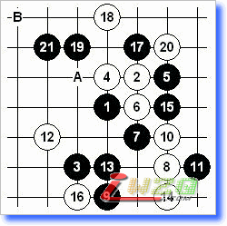
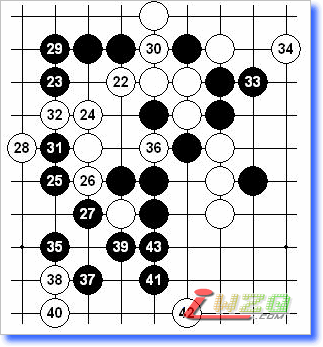
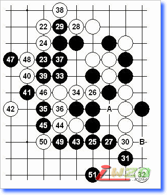

“名月”一型解答
#1 “名月”一型解答 作者：有志青年 发表时间：2007-10-12 16:25:44
最近常见orc有位玩家喜欢“名月”执白考对手图一的变化。这一型黑胜其实不难，但是由于头绪比较多容易误入歧途。下面贴两个最强防的变化。

图一：
21是显而易见的好点，此后白棋最强防A、B两点。

图二：22-A
23好棋！24最强。25、27关联的好次序，以下黑棋容易。

图三：22-B
25、27不易察觉的手筋，此局面白棋意外难防。如：36-A，37-B后黑棋左右各有胜法，白无法兼顾。
#2 Re:“名月”一型解答 作者：455 发表时间：2007-11-28 20:25:36
 xx谢谢有志愿青年
xx谢谢有志愿青年